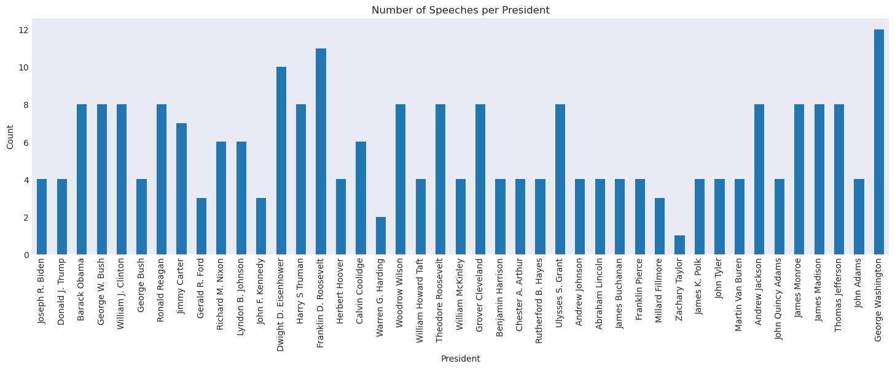
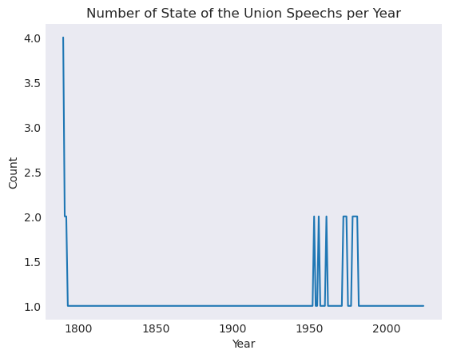
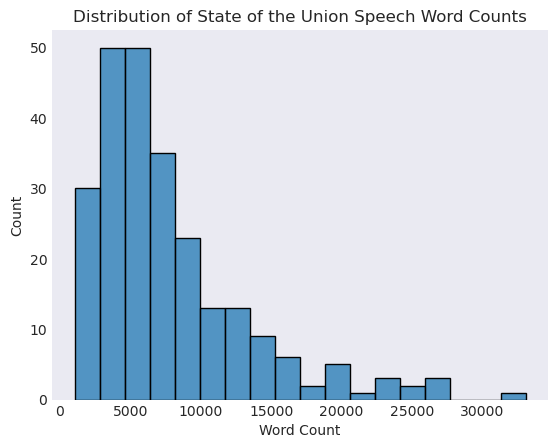
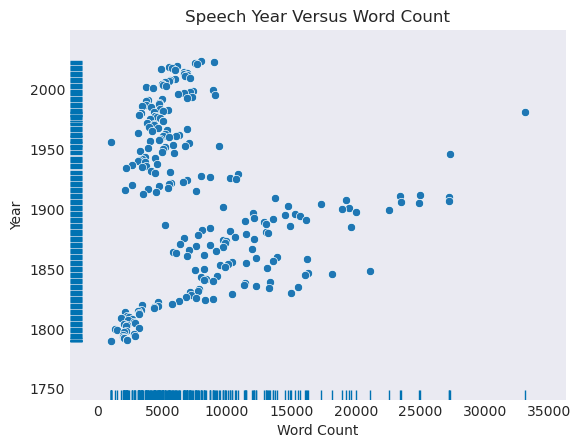
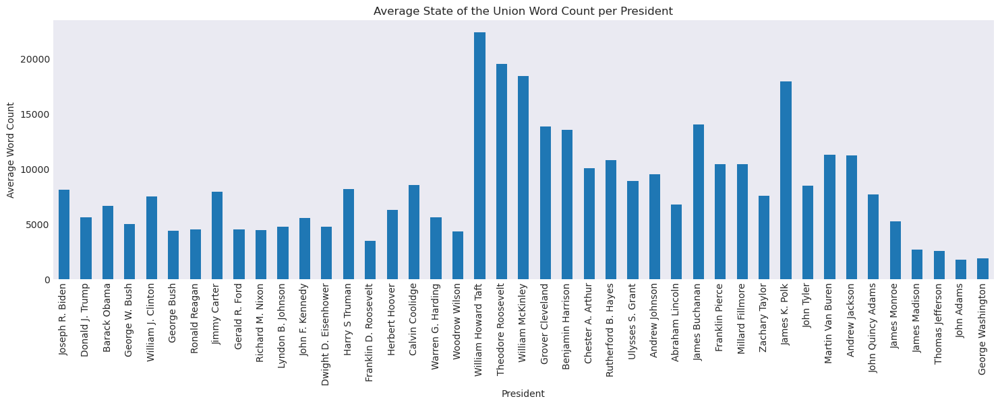

Project 2: Reproducibility in Natural Language Processing#
Part 1: Data Loading and Initial Exploration (15 pts)#
The data for this project is stored in the data folder in your repositories, in the SOTU.csv file. The data file is structured as a CSV with columns for president name, speech text, year, and word count in the speech.
In this section you will:
Import the data into a pandas dataframe
Perform exploratory data analysis (EDA) including specifically:
Analyze the number of speeches per president
Analyze the number of speeches per year
Analyze the word count distribution
Analyze the word count distribution accross years using a rug plot
Analyze the average word count per president
Write commentary on your findings
First, create the conda environment with the provided yaml file. Note, it’s not unusual for it to take ~15 minutes for the environment to fully install.
Read Data#
# imports
import pandas as pd
import matplotlib.pyplot as plt
import seaborn as sns
plt.style.use('seaborn-v0_8-dark')
# read in SOTU.csv using pandas, name the variable `sou` for simplicity
# the below cell is what the output should look like
# load in csv
sou = pd.read_csv('data/SOTU.csv')
sou
| President | Year | Text | Word Count | |
|---|---|---|---|---|
| 0 | Joseph R. Biden | 2024.0 | \n[Before speaking, the President presented hi... | 8003 |
| 1 | Joseph R. Biden | 2023.0 | \nThe President. Mr. Speaker——\n[At this point... | 8978 |
| 2 | Joseph R. Biden | 2022.0 | \nThe President. Thank you all very, very much... | 7539 |
| 3 | Joseph R. Biden | 2021.0 | \nThe President. Thank you. Thank you. Thank y... | 7734 |
| 4 | Donald J. Trump | 2020.0 | \nThe President. Thank you very much. Thank yo... | 6169 |
| ... | ... | ... | ... | ... |
| 241 | George Washington | 1791.0 | \nFellow-Citizens of the Senate and House of R... | 2264 |
| 242 | George Washington | 1790.0 | \nFellow-Citizens of the Senate and House of R... | 1069 |
| 243 | George Washington | 1790.0 | \nFellow-Citizens of the Senate and House of R... | 1069 |
| 244 | George Washington | 1790.0 | \nFellow-Citizens of the Senate and House of R... | 1069 |
| 245 | George Washington | 1790.0 | \nFellow-Citizens of the Senate and House of R... | 1069 |
246 rows × 4 columns
Exploratory Data Analysis#
Replicate the plots below using the hints specified. For each plot, provide some commentary describing the results/anything interesting you might see.
Number of Speeches per President#
# get the value counts of the presidents
president_counts = sou['President'].value_counts()[sou['President'].unique()]
president_counts
President
Joseph R. Biden 4
Donald J. Trump 4
Barack Obama 8
George W. Bush 8
William J. Clinton 8
George Bush 4
Ronald Reagan 8
Jimmy Carter 7
Gerald R. Ford 3
Richard M. Nixon 6
Lyndon B. Johnson 6
John F. Kennedy 3
Dwight D. Eisenhower 10
Harry S Truman 8
Franklin D. Roosevelt 11
Herbert Hoover 4
Calvin Coolidge 6
Warren G. Harding 2
Woodrow Wilson 8
William Howard Taft 4
Theodore Roosevelt 8
William McKinley 4
Grover Cleveland 8
Benjamin Harrison 4
Chester A. Arthur 4
Rutherford B. Hayes 4
Ulysses S. Grant 8
Andrew Johnson 4
Abraham Lincoln 4
James Buchanan 4
Franklin Pierce 4
Millard Fillmore 3
Zachary Taylor 1
James K. Polk 4
John Tyler 4
Martin Van Buren 4
Andrew Jackson 8
John Quincy Adams 4
James Monroe 8
James Madison 8
Thomas Jefferson 8
John Adams 4
George Washington 12
Name: count, dtype: int64
president_counts.plot(kind='bar', figsize=(18, 5))
plt.title('Number of Speeches per President')
plt.ylabel('Count');

# Plot
# Hint - use the .plot() method for Pandas Series, make sure all presidents show up on x-axis
Observation: George Washington, the first president, had the most speeches, and Franklin Roosevelt had the second most. Zachary Taylor had the least number of speeches. There seems to be no particular trend with the number of speeches of each president chronologically.
Number of Speeches per Year#
speeches_per_year = sou['Year'].value_counts().sort_index(ascending=True)
speeches_per_year
Year
1790.0 4
1791.0 2
1792.0 2
1793.0 1
1794.0 1
..
2020.0 1
2021.0 1
2022.0 1
2023.0 1
2024.0 1
Name: count, Length: 232, dtype: int64
speeches_per_year.plot()
plt.ylabel('Count')
plt.title('Number of State of the Union Speechs per Year');

The number of speeches peaked right before 1800, and had more of a steady count from 1 to 2 per year, with 2 speeches every few years from 1950 to before 2000. After that, it dropped back to 1 speech per year.
Word Count Distribution#
sns.histplot(data=sou, x='Word Count')
plt.title('Distribution of State of the Union Speech Word Counts');

Most speeches are close to 5000 words, and the distribution of the number of speeches is skewed to the right, with high numbers being around 30000 words.
Word Count Distribution over Year#
min_year = sou['Year'].min()
max_year = sou['Year'].max()
sns.scatterplot(data=sou, x='Word Count', y='Year')
sns.rugplot(data=sou, x='Word Count', color='#0072B2') # bottom axis ticks
sns.rugplot(data=sou, y='Year', color='#0072B2') # left axis ticks
plt.title('Speech Year Versus Word Count')
plt.show()

The number of words is more clustered around the lower end of the spectrum. There is somewhat of an upwards trend in number of words spoken over time, though it is unclear how strongly the word count and the year are correlated based on the visual.
Word Count Distribution per President#
mean_word_count = pd.Series(sou.groupby('President').mean('Word Count')['Word Count'])[sou['President'].unique()]
mean_word_count
President
Joseph R. Biden 8063.500000
Donald J. Trump 5586.500000
Barack Obama 6624.000000
George W. Bush 4971.750000
William J. Clinton 7457.625000
George Bush 4357.500000
Ronald Reagan 4482.875000
Jimmy Carter 7874.714286
Gerald R. Ford 4495.666667
Richard M. Nixon 4427.333333
Lyndon B. Johnson 4715.833333
John F. Kennedy 5555.000000
Dwight D. Eisenhower 4703.500000
Harry S Truman 8131.625000
Franklin D. Roosevelt 3476.090909
Herbert Hoover 6251.500000
Calvin Coolidge 8529.833333
Warren G. Harding 5612.500000
Woodrow Wilson 4311.625000
William Howard Taft 22335.750000
Theodore Roosevelt 19505.125000
William McKinley 18380.000000
Grover Cleveland 13798.250000
Benjamin Harrison 13507.500000
Chester A. Arthur 10031.250000
Rutherford B. Hayes 10784.000000
Ulysses S. Grant 8879.375000
Andrew Johnson 9485.500000
Abraham Lincoln 6746.250000
James Buchanan 13993.000000
Franklin Pierce 10377.000000
Millard Fillmore 10414.000000
Zachary Taylor 7559.000000
James K. Polk 17885.750000
John Tyler 8457.500000
Martin Van Buren 11261.250000
Andrew Jackson 11160.500000
John Quincy Adams 7662.500000
James Monroe 5224.500000
James Madison 2681.000000
Thomas Jefferson 2558.875000
John Adams 1769.250000
George Washington 1880.083333
Name: Word Count, dtype: float64
mean_word_count.plot(kind='bar', figsize=(18, 5))
plt.title('Average State of the Union Word Count per President')
plt.ylabel('Average Word Count');

William Howard Taft had the highest average word count, and there was an upward trend in average word count from abraham lincoln to william howard taft. After that, the word count looks pretty uniform with some fluctuations. After Taft, the maximum word count seemed to be around 7000 words.